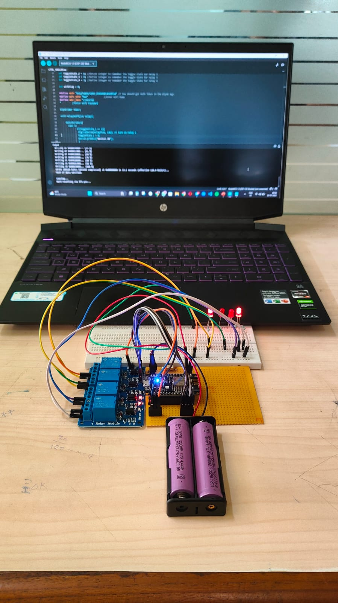
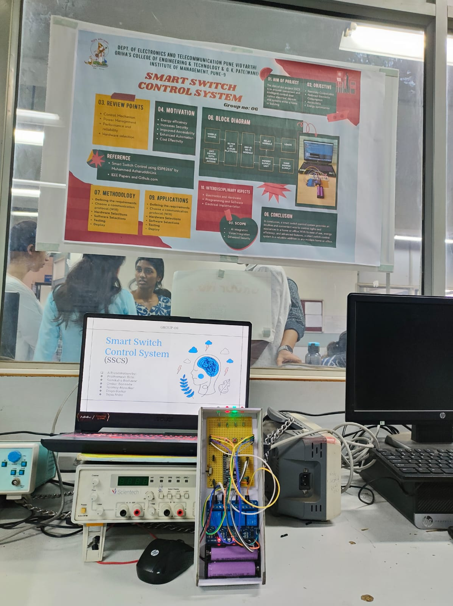
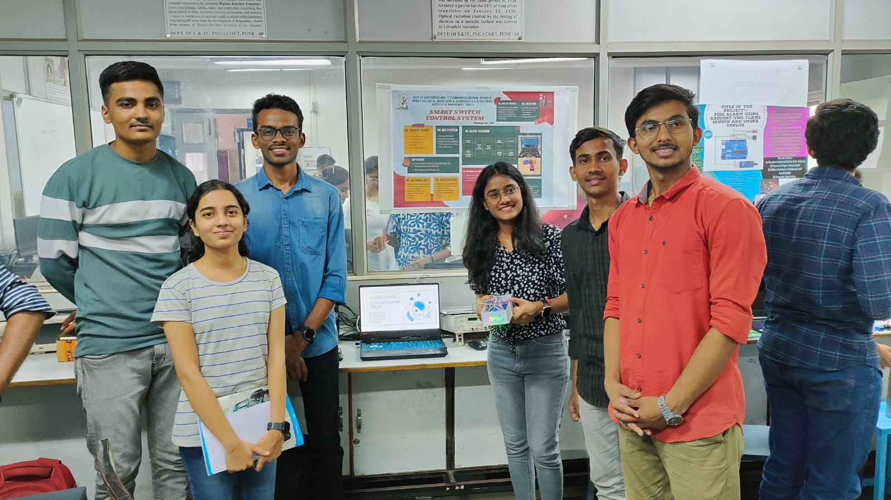

Smart Switch Control System
- Using wifi module(esp8266)
- Relay(5 volt 4 channel)
- Batteries(1.5+1.5)
- Blynk Cloud Platform with NodeMCU, Arduino IDE
- Voltage Regulator IC 7805
Aim of Project:
To provide convenient and intelligent control over various electrical devices
and systems, within a home or building.
Objectives:
- Remotely controllable.
- Reduced electricity consumption and optimization.
- Accessibility.
Methodology:
- Defining the requirements
- Choose communication protocol
- Hardware Selection(wifi module esp8266)
- Testing
- Deploy
Photos:


